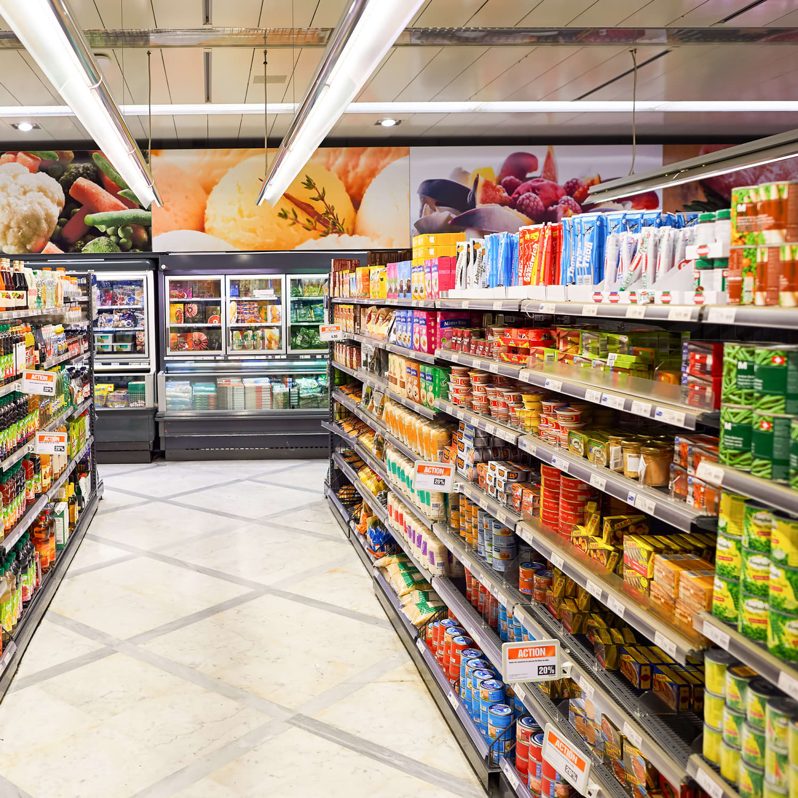

Edwin Forslund
Hej mitt namn är Edwin Forslund och jag är utvecklare hos Software AB. Mina arbetsuppgifter består
till mestadels av databashantering och webbdesign.
Mina bästa aspekter är nog att jag arbetar bra i
ett team, är noggrann med att följa kodningsstandarder, och älskar att programmera.
Färdigheter
CSS - 30%
HTML - 65%
Java - 40%
JavaScript - 83%
Projekt jag medverkat inom
Byggarbetslogistik
Logistik är viktigt inom många företag, inte minst sagt inom byggarbetsbranchen. Jag tillsammans med ett par andra arbetare på Software AB, hjälpte till med att skapa ett informationssystem för att hantera logistken på ett byggarbetsföretag.
Mataffärshemsida
Med den ökande populariteten av online-shopping så ökar vikten på företag att ha en snygg och användarvänlig hemsida. I detta projekt så skapade vi på Software AB en hemsida till en lokal matbutik, med möjligheten att granska och beställa varor för att hämtas ut, i färdiga kassar, i butiken.
Sjukhusinformationssystem
En av de viktigaste sakerna för läkare är att de har rätt information om sina patienter. Vi på Software AB utvecklade ett informationssystem åt ett sjukhus, som hanterar patientjournaler, recept och tidsbokningar.

Fotodelningssida
En av våra kunder älskade fotografering väldigt mycket och önskade att hen kunde dela med sig av sina bilder med andra fotografer. Så vi på Software AB tog oss i uppgift att förvekliga denna önskan. Nu kan fotografer världen över dela sina bilder med varandra på denna sida.

Databashantering hos Techbolag
För att ett techbolag ska kunna konkurrera med de bästa så måste de ha en toppklassad databas. Jag och mina kollegor på Software AB prioriterar kvalitet coh kundupplevelser allra högst, så vi hjälpte till att skapa och integrera en databas åt detta företag.